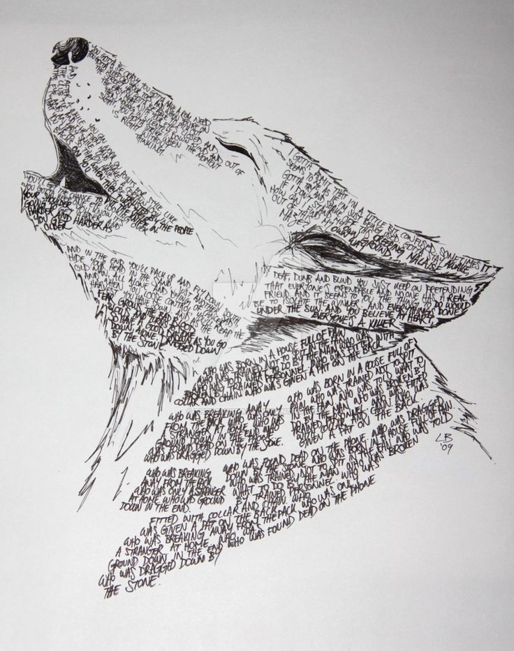

Dogs

David Gilmour y Roger Waters comparten créditos en las voces de la segunda composición, “Dogs”,
la más extensa del álbum y que había sido estrenada en vivo durante la gira de Wish You Were Here con el nombre de “Gotta be Crazy”.
Animals tiene un planteamiento más crudo y sencillo que The Dark Side of the Moon (1973) y Wish You Were Here (1975).
En este álbum la guitarra juega un rol preponderante mientras las teclas de Rick Wright procuran más una ambientación discreta
que sólo se extiende al sonido de los animales mientras oímos:
“Debes estar loco, debes tener una necesidad real / Debes dormir en los dedos de tus pies, y cuando estás en la calle /
Debes poder escoger la carne fácil a ojos cerrados / Y luego moverte en silencioso e invisible viento /
Debes atacar sin pensar cuando el momento sea el correcto”
Entre las siete estrofas, el desarrollo instrumental nos recuerda un poco al ‘double lead guitar’ de Wishbone Ash.
Entre otros sonidos, podemos escuchar perros ladrando y Gilmour jugueteando con un sonido agudo.
La rítmica convencional de Nick Mason nos mantiene enfocados en letra, guitarra y las teclas de Wright.